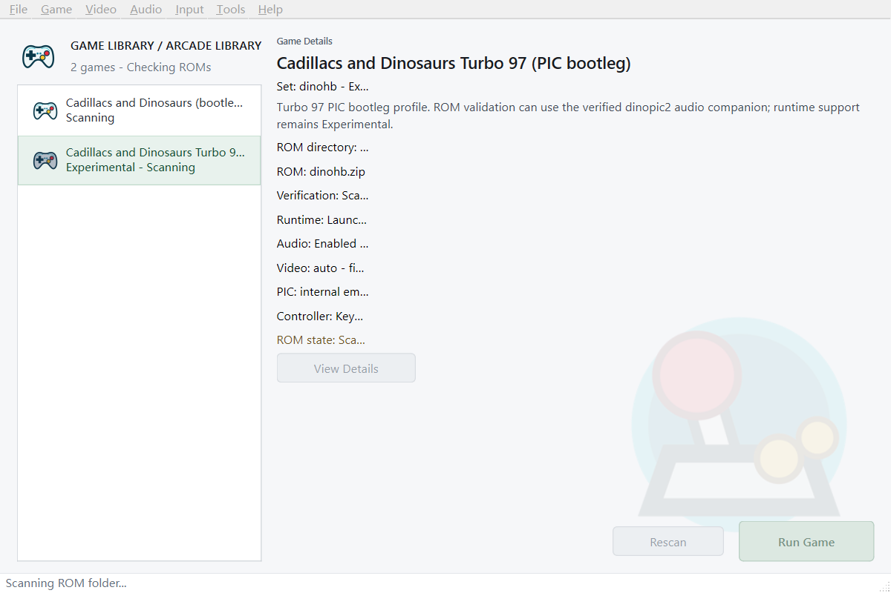
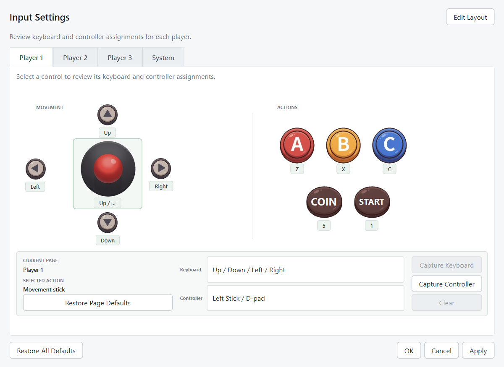

1.0.1
PRODUCTION UPDATE
The latest installer includes the controller-input fix tested with the embedded runtime, plus the required Qt, MinGW and SDL runtime dependencies.
View purchase options
WINDOWS X64 DESKTOP SOFTWARE
A focused arcade runner for DINOPIC2 and the experimental DINOHB profile.
Launch, configure and play from one clean Windows application. Bring your own legally obtained game data.
LATEST RELEASE
This production update improves controller input reliability and makes fresh Windows installations easier to deploy.
PRODUCTION UPDATE
The latest installer includes the controller-input fix tested with the embedded runtime, plus the required Qt, MinGW and SDL runtime dependencies.
View purchase optionsRaw joystick fallback now complements SDL GameController mappings when a device reports incomplete high-level mappings.
Controller events remain available as focus moves between the launcher and the game runtime window.
The release package carries the Qt, MinGW and SDL dependencies needed on a clean Windows PC.
DINOPIC2 remains supported and DINOHB remains experimental. ROMs and copyrighted game data are not included.
PURPOSE-BUILT
Dinorun brings the essential setup, input and session tools into a compact native Windows application.
Scan compatible ZIPs, verify required files and launch from a straightforward arcade library.
Configure keyboard bindings for Player 1, Player 2, Player 3 and system actions. Controller input is experimental.
Fullscreen switching, scaling choices, filters, scanlines and a CRT-style display preset.
Use quick save/load or ten manual save slots with thumbnails, all from the same session.
Switch between English and Simplified Chinese without restarting your session.
DINOPIC2 is supported. DINOHB is included as an experimental profile.
NATIVE WINDOWS UI
INPUT, YOUR WAY
The visual input panel keeps movement, actions, coin and start controls easy to understand. Configure three players plus Service Mode, Soft Reset and Pause.

Three players. Three action buttons. One focused desktop experience.
FROM PURCHASE TO PLAY
Receive the Windows installer and your order details.
Open the activation window and copy the request code created for that computer.
Send the request code to the authorized issuer and receive your machine-bound activation code.
Import the activation code, select your ROM folder, set your controls and play.
Activation does not require a continuously online account. Each computer requires its own license.
ONE-TIME PURCHASE
A single-machine license for the Windows desktop application.
ONE-TIME PRICE
Secure payment via PayPal. Taxes, if applicable, are calculated at checkout.
Game ROMs and copyrighted game data are not included.
BEFORE YOU BUY
No. Dinorun is emulator software only. You must provide legally obtained, compatible game data.
Dinorun is built for Windows x64 desktop computers. It is not offered for Android, iOS or macOS.
No. The perpetual license is bound to one computer. A different computer requires a separate activation.
DINOHB remains experimental. DINOPIC2 is the primary supported profile.
The current build is not code-signed, so Windows SmartScreen or antivirus software may warn on first launch. Verify files using the publisher-provided SHA-256 checksums.
No. Dinorun is an independent software project and is not affiliated with, authorized, sponsored or endorsed by Capcom.